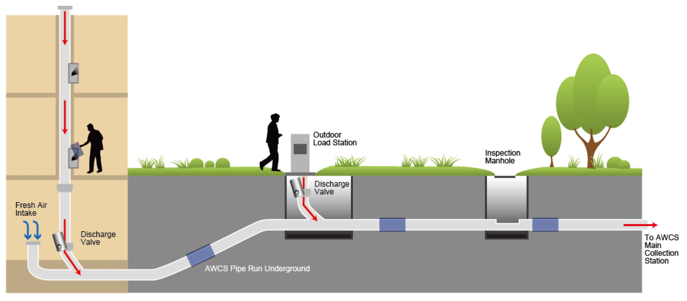

Environment
Smart Rubbish Collection
The pneumatic and selective waste collection system minimizes noise pollution from the traditional waste collection methods and improves quality of urban spaces as waste containers disappear from the streets. The system consists of a network of fixed collection points strategically distributed, where the users deposit their waste allowing the separation of waste fractions. The compact drop-off containers have a subterranean vacuum network through the pipes, sucking up trash below the ground, which decreases noise pollution made by trash trucks and keeps the public space and stench clear.
Smart Watering
Smart irrigation system gather information about humidity, salinity, temperature, wind and several other factors through sensors that automatically regulate the amount of water and time by means of a program that can be managed with computers, smartphones and tablets. Besides, it will stop watering during bad weather to save water source.
Smart Lighting

More efficient lighting using LED technology is being installed in Barcelona to reduce cost and pollution. These lights optimize energy and use a smart function: it activates when detecting motion, but also gathers environmental information, humidity, temperature, pollution, and noise.